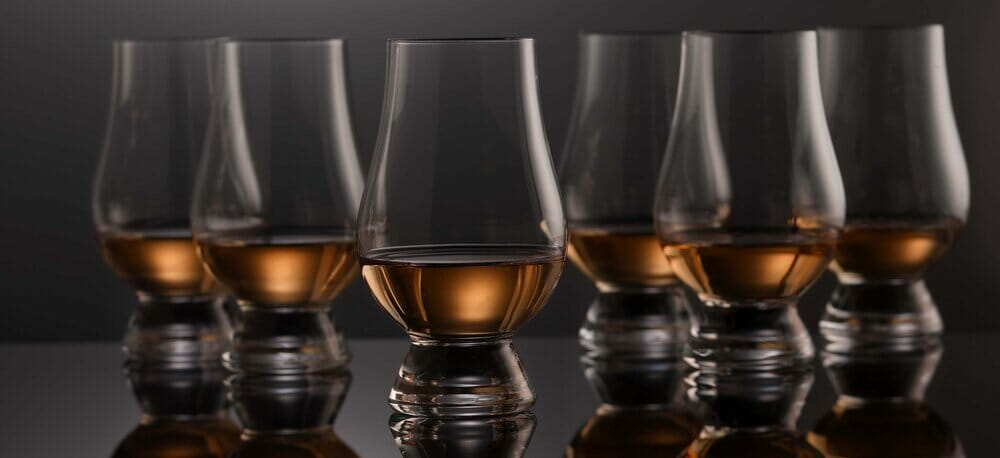
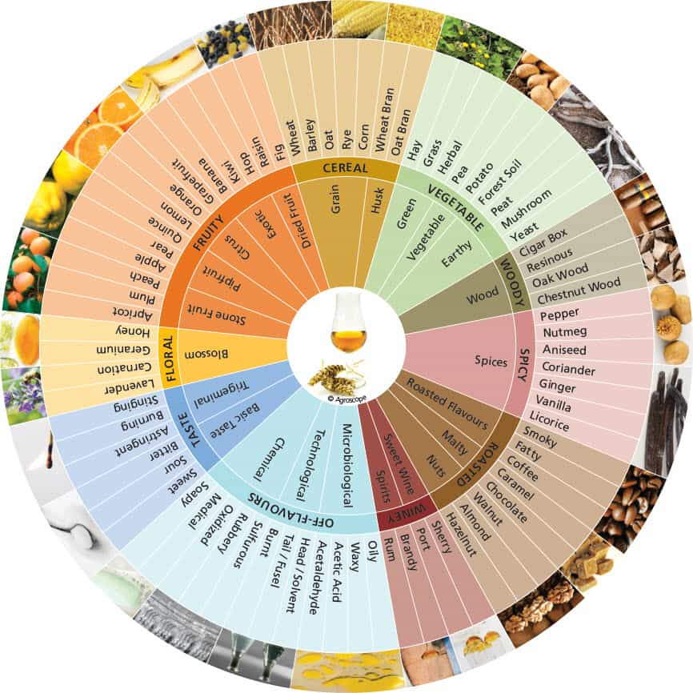
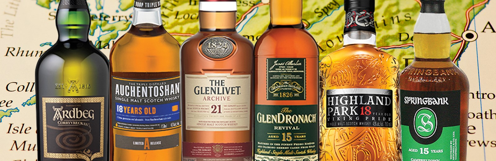

How To Properly Taste Whisky
by Harvey Spector
To Really Maximaize Your Whisky Tasting Experiance First Youll Need To Have Some Basic Knowladge Abbout Whisky All Together And Scotch In Preticular.

Glenmorangie’s Brendan McCarron shares his tasting techniques over a glass of the limited-edition Glenmorangie Astar 2017.
A chat with Brendan McCarron over a glass of Glenmorangie or Ardbeg—he is the Head of Maturing Whisky Stocks for the company—sheds the stuffy, highfalutin image as his boyish enthusiasm for the Scottish spirit shines through. With some helpful tips for appreciating whisky, McCarron shows us how a dram after dinner might be sweeter than a dessert of ice cream and crème brûlée.
Whisky, Bourbon, Scotch—what’s the difference?
In essence, whisky is an alcohol distilled from fermented grain mash; therefore, bourbon, made from corn, and Scotch, made from malted barley, are both whiskies. However, Scotch is made in Scotland, and bourbon is made in America. But as McCarron explains, Scotch and bourbon share an interesting relationship: “Historically, the bourbon industry uses each cask once, so there was a market to buy used casks from America. Using new casks for bourbon suits the nature of bourbon and also takes the edge off and seasons the cask, making it perfect for aging whisky afterwards.” When a bourbon cask is brought to Scotland and filled with whisky for the first time, it is called a first fill cask, and these first fill casks are considered most interesting because it extracts the strongest flavors from the wood.
Let's talk about the relationship between wood and whisky.
In 2008, Glenmorangie released the Astar, a limited-edition single malt whisky entirely matured in oak casks from the  Ozark mountains of Missouri. McCarron was a fan of the original and longed to revisit the single malt’s unique character. But casks designed to such precise specifications require many years and much dedication to create. “The whole thing is a very controlled process,” explains McCarron. “We own these slow-growing trees in America that grow very straight and tall and after we fell them, they are seasoned for two years so all the flavors are kept in the wood. Once they are made into casks, we heavily toast them and lightly char them, completely in control of what these casks are going to do, and fill them with bourbon for four years exactly—almost to the second—and this makes the casks as perfect as they can be, only then does the Glenmorangie spirit go in.” It has taken almost a decade for Glenmorangie to orchestrate the whisky’s return and McCarron takes us through a tasting of the newly-released Astar 2017. “The Astar uses designer first fill casks. Even the Glenmorangie Original only uses the casks twice, other whiskies might use them up to six times. So, the Astar is like the Original on steroids, a pumped-up version of the Original.”
Scotch Whisky Regions
There are five that remain undisputed: Speyside, Highlands & Islands, Lowlands, Islay, and Campbeltown. The Islands are often considered a region on its own, but they are actually part of the Highlands. We've opted to consider it the sixth region as their flavor profiles are quite different to those in the Highlands on the mainland.
Highlands
- Most famous Highlands Whisky: Dalmore and Glenmorangie
- Number of distilleries: Over 25
- Typical Highland flavours: Fruit Cake, Malt, Oak, Heather, Dried Fruit and Smoke
The Highlands is Scotland's largest whisky producing area, covering anywhere from the north of Glasgow (the Clyde estuary to the River Tay) all the way to Thurso in the north, not to mention the east and west regions excluding Speyside. Due to the large area, whisky in the Highlands is very diverse and offers a vast amount of different flavours so it's hard to put a certain style on Whisky from this region. It's easier to split the Highlands into four subregions, north, east, south and west. Each of these subregions has its own style.
Speyside
- Most famous Speyside Whisky: Macallan, Dalwhinnie, Glenlivet and Glenfiddich
- Number of distilleries: Over 60
- Typical Speyside flavours: Apple, Vanilla, Oak, Malt, Nutmeg and Dried Fruit
The region of Speyside is located in the north east of Scotland surrounding the River Spey, it's a sub-region to the neighbouring Highlands because of the high density of distilleries in the area. It's home to the highest number of distilleries in Scotland with well over 60 at present. Speyside is known for its wide range of whiskies displaying different characters, famously for sweet single malts with either very little peat or absolutely no peat present at all. Because of this style, Speyside tends to be a good entry level for those beginning their Whisky adventure as they allow the user to discover their favourite tastes when it comes to drinking single malts.
Lowlands
- Most famous Speyside Whisky: Auchentoshan, Glenkinchie
- Number of distilleries: Under 5
- Typical Lowland flavours: Grass, Honeysuckle, Cream, Toffee, Toast and Cinnamon
Lowlands is the second biggest whisky region in terms of the area it covers, but it's currently only home to fewer than five distilleries. The Lowlands region covers the south of Scotland up to the north of Glasgow and Edinburgh where it meets the border on the Highlands, the line follows the old county borders running from the Clyde estuary in the west to the River Tay in the east, anything south of this is to the border with England is classified as the 'Lowlands' in whisky terms. Lowlands whiskies tend to be light and gentle with no peatiness, unlike any other region they were once all triple distilled, only Auchentoshan uses this technique now for all of its production. Due to the inland location of the distilleries, there is little salinity within the Whisky, because of this Lowland Whiskies are a great entry into malt whisky.
Campbeltown
- Most famous Speyside Whisky: Glengyle and Springbank
- Number of distilleries: Under 5
- Typical Campbeltown flavours: Brine, Smoke, Dried Fruit, Vanilla and Toffee
Campbeltown is part of mainland Scotland but it's found at the foot of the Mull of Kintyre and was once a thriving whisky hotspot with over 34 distilleries, however it's now home to just 3. Once at a high of 34, a slump in the 1850’s meant this number was halved and what followed was a calamitous fall from grace for Campbeltown. A mixture of improved transportation links to the rival distilleries in the north and a decline in quality as distillers cut corners for mass-production resulting in an inferior product. Today, Campbeltown Whisky is known for its dryness and sometimes pungency taste because of its location, the region sticks out of the mainland and is actually closer to neighbouring islands Arran and Islay than any other mainland producer.
Islay
- Most famous Islay Whisky: Ardbeg, Laphroaig, Lagavulin and Bruichladdich
- Number of distilleries: Under 10
- Typical Islay flavours: Seaweed, Brine, Carbolic Soap, Apple, Smoke and Kippers
The Scottish island of Islay (pronounced eye-luh) is located to the west of the mainland and is the smallest Whisky region in terms of area coverage in Scotland. Even though it's a relatively small island, Islay is currently home to 8 distilleries, 3 of which are World famous, Ardbeg, Laphroaig and Lagavulin. The region is known for its peaty single malts and it's believed that whisky distillation reached Scotland from Ireland via Islay in the 13th century, hence the high number of past and present distilleries on the island.
Islands
- Highland Park, Talisker and Jura
- Number of distilleries: Under 10
- Typical Island flavours: Smoke, Brine, Oil, Black Pepper and Honey
Scotch produced on the islands surrounding the mainland of Scotland offer a very diverse and different taste, they're not however recognised by the Scotch Whisky Association but are easily grouped together for geographic reasons as one as they're all islands. There are nearly 800 islands off of Scotland’s coastline with only a few are actually inhibited, it's easy to see why the varying style differentiates from North to South. Of the inhibited islands, Orkney has 2 whisky distilleries, Scapa and Highland Park, Lewis & Harris is home to Abhainn Dearg, Talisker is located on Skye, Tobermory on Mull with Jura and Arran located on their namesake islands. Although diverse in flavours, peat and salinity are found in all of the Islands whiskies, the latter because of the vicinity to the sea.
Tasting Guidelines
Finally After Learning Some Theory We Can Start Drinkning, To Get Head Of Yourself Start Slowly And Clear Your Mind, Clean Your Mouth From Forgin Tastes And Dont Forget To Enjoy!
1.
Appearance, color and observations
Swirl the spirit in the glass. Observe the color, clarity and legs (the tear-dropped streaks that run down the glass). Slower dripping legs indicate a higher viscosity which may be an indicator of age.
2.
Nose, aroma and Memories
Give the spirit time to breathe. Swirl the spirit in the class. Always nose spirits with your mouth open to help the aroma roll through your olfactory organ. Holding your glass level, smell with your nose in the center of the glass.
3.
Palate, relax and taste
This is the initial arrival of the spirit on the palate. Different regions of the tongue detect different tastes: sweet (on the tip) salty and sour (at the sides) and dry/bitter (at the rear). Allow the spirit to flow completely over the tongue and linger a moment as the sensory receptors work at various speeds, sending signals to the brain at varying rates.
4.
Finish and Balance
After a few seconds, the finish and balance can be described by answers to the following questions: What is left on the palate? Is the palate clean and simple? Is there some complexity? What can be observed after five or ten seconds? Did the whisky have a long or a short finish?